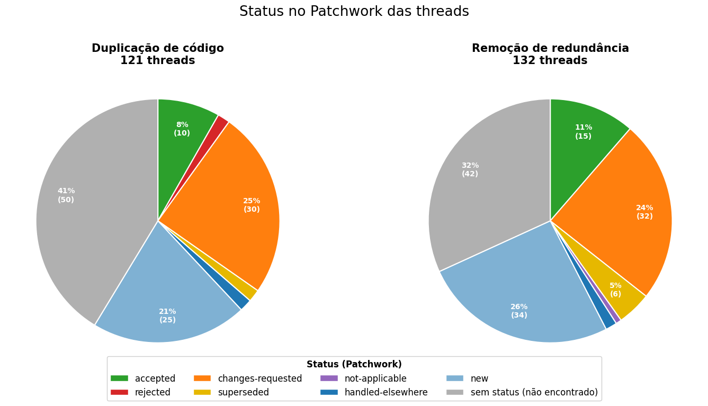
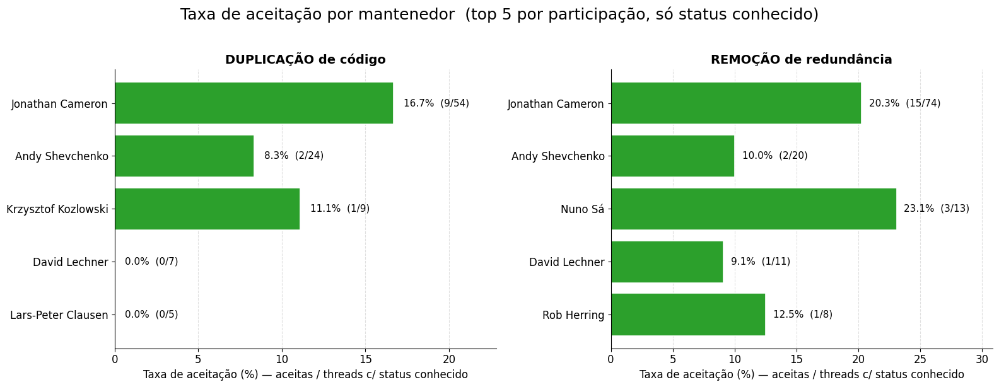

Summary
In this post, we describe the plan for a small empirical study about code deduplication patches in the Linux kernel mailing lists. The goal is to understand how often kernel patches are related to duplicate or redundant code, how these patches are discussed by maintainers, and whether accepted and rejected patches show different patterns.
We use the Linux Kernel Mailing List 5Ws Dataset, which collects Linux kernel mailing-list messages and organizes them into subsystem-specific data files. Since this post is only a small demonstration of the proposed pipeline, we restrict the analysis to the iio subset rather than running the full study across all available subsystems.
Motivation
Code duplication is usually discussed as a software maintenance problem: duplicated logic can make bugs easier to copy, fixes harder to apply consistently, and codebases more difficult to evolve. However, in a large project such as the Linux kernel, not every repeated pattern is obviously bad. Sometimes duplication is intentionally kept for readability, hardware-specific behavior, subsystem isolation, or because an abstraction would make the code harder to understand.
This makes kernel patch discussions a useful source of evidence. Instead of only asking whether duplicate code exists, we can study how developers justify removing it, when maintainers accept deduplication patches, and when they push back against them.
Research questions
We organize the study around three main questions.
- Q1: How many mailing-list threads (i. e. patches) are actually related to source-code duplication or deduplication?
- Q2: Among the deduplication-related patches, how many were accepted, rejected, or left unresolved?
- Q3: Do maintainers differ in how they respond to deduplication-related patches?
Defining duplication
The first step is to define what we mean by duplication. We start from the clone taxonomy summarized by Chen, Zain, and Zhou in Definition, approaches, and analysis of code duplication detection (2006–2020): a critical review, and adapt it to the kernel patch setting.
Type-1 clones are near-identical code fragments, usually differing only in whitespace, comments, or formatting. Type-2 clones also allow changes in names, literals, or identifiers. Type-3 clones include copied code with added, removed, or modified statements. Type-4 clones are semantically similar pieces of code that implement the same behavior but may look structurally different.
In this study, a thread is treated as CODE_DUPLICATION when it explicitly discusses duplicated source-code logic or a deduplication refactor. Typical examples include extracting duplicated logic into a helper, replacing multiple implementations with one common implementation, or sharing repeated initialization code across call sites.
Importantly, removing redundancy is not the same as removing code duplication. Many kernel patches remove repeated function calls, duplicated checks, unnecessary conditions, dead code, or cleanup-only logic. These changes may still be useful, but they should be classified separately as REDUNDANCY_REMOVAL, not as CODE_DUPLICATION.
Data preparation
The data preparation has four stages. First, we group emails into threads. Second, we apply a permissive regex filter to the subject and body of each thread. Third, we pass the remaining candidate threads to an LLM classifier to separate true code-duplication cases from false positives and redundancy-removal cases.
Step 1: Group emails into threads
We start by grouping emails into discussion threads. The thread is the unit of analysis because a single patch email may not contain enough context. Follow-up messages often clarify whether the patch is really about duplicated source code, a simpler cleanup, or something unrelated to code duplication.
Step 2: Permissive regex filter
We then apply a permissive keyword filter to the subject and body of the emails in each thread. The goal is not to be precise at this stage, but to avoid missing potentially relevant discussions. In other words, this step is designed for high recall: it selects candidate threads that may mention duplicated or redundant source code, while leaving the final classification to the LLM-based filter.
DUPLICATED_CODE_RE = re.compile(
r"""
\b(?:
# Action or property followed by code-related context.
# Examples: "duplicate code", "cloned macro", "redundant logic"
(?:
de[-_]?duplicat\w* |
dedup\w* |
duplicat\w* |
repeated |
redundant |
identical |
same |
cloned?
)
\s+
(?:code|check|logic|block|function|routine|macro|implementation|snippet)
|
# Code-related context followed by duplication terminology.
# Examples: "code duplication", "logic deduplication"
(?:code|logic|block|function|routine|macro|snippet)
\s+
(?:duplication|deduplication|dedup\b)
|
# Explicit copy-paste terminology.
copy\s*[-_]?\s*past(?:e|ed|ing)
)\b
""",
re.IGNORECASE | re.VERBOSE,
)
This regular expression searches for three kinds of evidence. First, it captures duplication-related words followed by a code-related term, such as duplicate code, redundant logic, or cloned macro. Second, it captures the reverse order, such as code duplication or logic deduplication. Third, it captures explicit copy-paste terminology, such as copy-paste, copy pasted, or copy pasting. Because this filter is intentionally permissive, it may still include false positives; these are handled in the next classification step.
Step 3: LLM-based classification
After the regex stage, the remaining candidate threads are given to an LLM. The LLM receives the full thread and returns a single label describing whether the discussion is about source-code duplication, redundancy removal, or something else.
SYSTEM_PROMPT = """
You are an expert in Software Engineering,
code clone detection and Linux Kernel development.
Your task is to classify whether an LKML thread
(a discussion composed of one or more emails)
is actually related to source code duplication.
You will receive every message of the thread, in order.
Consider the whole discussion together and return a
single label that best describes the thread.
The dataset was already filtered using regex.
Therefore many emails contain words such as:
duplicate
duplicated
duplication
but are false positives.
Analyze the technical meaning.
------------------------------------------------
CODE DUPLICATION
Code duplication occurs when the same or
substantially similar program logic exists
in multiple source code locations.
Clone taxonomy:
Type 1:
Exact duplicated code.
Type 2:
Duplicated code with renamed identifiers,
constants or types.
Type 3:
Copied code with modifications,
added or removed statements.
Type 4:
Different implementations providing
equivalent functionality.
------------------------------------------------
CODE DEDUPLICATION
Deduplication happens when duplicated
implementations are refactored into a
single shared implementation.
Examples:
- Extract duplicated logic into a helper.
- Replace multiple implementations by one common implementation.
- Share common initialization code.
------------------------------------------------
IMPORTANT
Removing redundancy is NOT code duplication.
Examples:
- Removing repeated function calls.
- Removing duplicated checks.
- Removing unnecessary conditions.
- Removing dead code.
- Cleanup.
These should be classified as:
REDUNDANCY_REMOVAL
------------------------------------------------
False positives:
These are NOT code duplication:
- duplicate index
- duplicate timestamp
- duplicate packet
- duplicate request
- duplicate message
unless the email explicitly discusses
duplicated source code.
------------------------------------------------
Return ONLY one label:
CODE_DUPLICATION
REDUNDANCY_REMOVAL
NOT_CODE_DUPLICATION
INSUFFICIENT_INFORMATION
"""Manual verification
For this pipeline to become part of a full paper, we would need to validate whether the LLM can correctly classify the filtered threads. A reasonable next step would be to manually label a subset of threads, compare those labels with the LLM outputs, and estimate agreement between human and model judgments.
Since this post is only a proposal and small demonstration, we skip the manual validation step for now and trust the LLM classifications as a first approximation.
Step 4: Retrieving patch status
After filtering the threads with the LLM, we cross the resulting set of candidate patches with the Patchwork API. Patchwork is a patch-tracking system used by several Linux kernel subsystems to follow patches submitted to mailing lists. In this study, we use it to estimate the current status of each deduplication-related patch.
The main statuses we consider are accepted, rejected, changes-requested, new, superseded, not-applicable, and handled-elsewhere. In practice, accepted suggests that the patch was accepted or merged, rejected means it was not accepted, changes-requested indicates that reviewers asked for revisions, and new usually means that no final decision is recorded yet. The superseded status is used when a patch was replaced by a newer version, while not-applicable and handled-elsewhere capture cases where the patch is no longer directly tracked as a normal pending patch.
Some threads could not be matched to a Patchwork entry. We keep these cases as no status found, since the absence of a Patchwork record does not necessarily mean that the patch was rejected or ignored.
Results: How many mailing-list threads (i.e. patches) are actually related to source-code duplication or deduplication?
| Stage / label | Number of threads | Percentage of total iio threads |
|---|---|---|
Total iio threads |
16,291 | 100.00% |
| Threads after regex filter | 429 | 2.63% |
CODE_DUPLICATION |
121 | 0.74% |
REDUNDANCY_REMOVAL |
132 | 0.81% |
The permissive regex filter substantially reduces the search space, from 16,291 iio threads to 429 candidate threads, or 2.63% of the subset. After LLM classification, 121 threads are labeled as source-code duplication or deduplication, while 132 are labeled as redundancy removal. Together, these two useful categories account for 253 threads: 1.55% of all iio threads and 58.97% of the regex-filtered candidates.
Results: Among the deduplication-related patches, how many were accepted, rejected, or left unresolved?

Among the 121 threads classified as code duplication, only 10 were marked as accepted in Patchwork, corresponding to 8% of the duplication-related threads. A larger fraction received changes requested, with 30 threads, or 25%, while 25 threads, or 21%, were still marked as new. The largest group was composed of threads for which no Patchwork status was found, with 50 threads, or 41%.
The redundancy-removal threads show a similar pattern. Out of 132 threads, 15 were accepted, corresponding to 11%, while 32, or 24%, received changes requested. Another 34 threads, or 26%, were marked as new, and 42 threads, or 32%, had no Patchwork status found. Overall, accepted patches are a minority in both groups, while unresolved or unmatched Patchwork statuses represent a large part of the data. This suggests that the Patchwork matching step is useful, but the acceptance/rejection analysis should be interpreted carefully.
Results: Do maintainers differ in how they respond to deduplication-related patches?
To answer this question, for each maintainer we count the threads in which they participated and compute the acceptance rate among those threads with known Patchwork status.

The acceptance rate varies across maintainers, but the differences should be interpreted carefully because the number of threads per maintainer is small for several cases. For code-duplication threads, Jonathan Cameron appears most frequently in the data and accepted 16.7% of the threads with known status. Other maintainers show lower acceptance rates, including some with no accepted patches in this subset. For redundancy-removal threads, acceptance rates are slightly higher overall: Jonathan Cameron accepted 20.3%, while Nuno Sá accepted 23.1% of the threads with known status. Overall, the figure suggests that maintainer-level differences may exist, but a larger sample and a more careful statistical analysis would be needed before making strong claims.
Conclusion and next steps
This small exploration suggests that deduplication-related patches can be studied systematically from Linux kernel mailing-list data, but the current analysis should be seen only as a first demonstration of the pipeline.
To expand this idea into a full paper, one could try different filtering strategies, including alternative regex patterns and LLM prompts, extend the analysis to other subsystems beyond iio, and perform manual verification of the LLM classifications on a labeled subset of threads. This would make it possible to estimate classification quality and support stronger claims about how code duplication and redundancy-removal patches are discussed and reviewed.